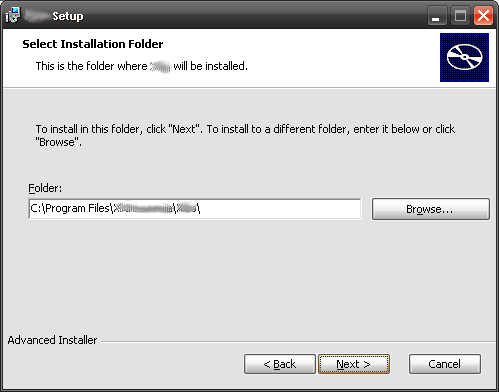
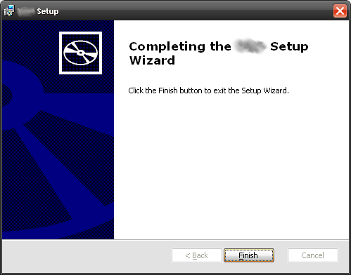

Installation du client Windows
Le client windows de Xibo est distribué sous forme de fichier d'installation "MSI" correspondant à une installation standard par "double-clic".
Le processus comprend trois étapes:
- Préparation - conditions minimales et MSI
- Installation - Double cliquez sur le MSI pour commencer l'installation.
- Connexion - Connectez votre client au CMS
Conditions minimales
Xibo est une solution d'affichage dynamique à faible consommation. Toutefois, avec les progrès de la technologie il a été nécessaire de fixer certaines conditions minimales. Celles-ci seront vérifiées par le programme d'installation mais elles sont cependant répertoriées ci-dessous pour plus de commodité:
- Connexion réseau au CMS (si possible par internet)
- Microsoft Windows 7
- Framework .NET v4.5
- Internet Explorer 8+ (IE10 ou supérieur recommandé)
- Flash Player Version 9 ou supérieure
- Windows Media Player 11 ou supérieur
- Pour les supports PowerPoint, Microsoft PowerPoint 2003 ou supérieur. La visionneuse PowerPoint n'est pas adaptée.
Installation
Pour commencer l'installation double cliquez sur le fichier Xibo-client-1.7.0-beta-x86.msi que vous avez téléchargé avec le pack. Le programme d'installation vous guidera au fil des différents écrans et vous demandera de confirmer à chaque étape. Elles sont décrites ci-dessous.
Étape 1
Lors de l'installation de Xibo il se peut que vous voyez l'avertissement de sécurité suivant. Veuillez cliquer sur "Exécuter" pour commencer l'installation.

Étape 2
Le programme d'installation affiche un écran de bienvenue. Appuyez sur "Suivant".

Étape 3
Choisissez l'emplacement où Xibo doit être installé. Normalement, l'emplacement par défaut doit convenir, cependant si vous souhaitez le changer, cliquez sur Parcourir. Après l'avoir sélectionné (ou choisi la valeur par défaut) cliquez sur "Suivant" pour continuer.

Étape 4
Un messsage de confirmation apparaît. Si ces choix vous conviennent, cliquez sur "Install" pour commencer. Sinon cliquez sur "Précédent" pour corriger.

Étape 5
Fin de l'installation. Cliquez sur "Terminé" pour quitter le programme.

Connexion au CMS
Avant toute utilisation, les clients nouvellement installés doivent être configurés et enregistrés auprès du CMS de Xibo. Les options de configuration de Xibo sont accessibles depuis chaque installation client dans le menu Démarrer, Tous les programmes.
Sélectionnez "Options client Xibo" pour enregistrer cet afficheur sur le réseau Xibo; ou pour modifier la configuration de cet afficheur.
Écran des options clients
La plupart des options clients sont définies sur le CMS et transmises au client par le réseau. Ceci réduit au minimum la configuration du client pour chaque nouvelle installation.
Pour que le CMS puisse envoyer ces options, il est indispensable d'enregistrer l'afficheur auprès de celui-ci. Cette tâche s'effectue à partir de l'écran options clients, représenté ci-dessous.

Quelques autres paramètres ne peuvent être réglés que depuis l'installation du client. Les voici ci-dessous.
Paramétrages
Adresse du CMS
Il s'agit de l'adresse complète de votre installation CMS. Par exemple http://your.domain/cms/.
Clé La clé secrète CMS qui authentifiera votre afficheur auprès de lui.
Bibliothèque locale C'est l'emplacement où ce client d'affichage stocke ses fichiers locaux. Ces fichiers sont téléchargés depuis le CMS de sorte que le client reste opérationnel même en cas de perte de la connexion avec le CMS.
Identité de l'afficheur C'est l'ID unique correspondant à cet afficheur. Un ID unique automatiquement généré est attribué lors de l'installation mais il pourra être modifiée s'il y a lieu.
Écran d'accueil Il est possible de remplacer l'écran d'accueil par une image stockée en local sur le PC client.
paramétrage du proxy
Le client d'affichage doit avoir accès au CMS durant le processus d'enregistrement ainsi que pour recevoir du nouveau contenu. Si le client est derrière un serveur proxy, saisissez les informations le concernant dans la section Proxy.
Nom d'utilisateur Nom d'utilisateur vous authentifiant auprès du serveur proxy.
Mot de passe Mot de passe vous authentifiant auprès du serveur proxy.
Domaine Domaine vous authentifiant auprès du serveur Proxy.
Le bouton Enregistrer et les messages d'états
Lorsque tous les réglages ont été saisis (adresse minimum du CMS, clé, bibliothèque locale et ID de l'afficheur), appuyez sur le bouton Enregistrer. Un message apparaît alors "Enregistrement sur le CMS... Veuillez patienter..."
S'il n'y a pas eu d'erreur de communication entre l'adresse du CMS et le client, l'afficheur est enregistré et en attente d'approbation.
Gestion de l'afficheur du CMS
Connectez-vous maintenant à l'interface web du serveur, rendez-vous sur la page "Afficheurs". Le client que vous venez d'enregistrer doit apparaître dans la liste. Cliquez sur le bouton "Edit" à côté de l'afficheur. Le statut de la licence passera automatiquement à "yes". Il est possible d'opter pour une présentation par défaut différente (il s'agit de la présentation que verra le client si rien n'est programmé).
Définition des profils de l'afficheur
Lors de l'enregistrement un profil de configuration par défaut est attribué au client d'affichage. Pour plus d'information voir la section Profils d'affichage.
N'oubliez pas de cliquer sur Enregistrer avant de quitter les options clients.
Démarrage du lecteur de contenus client
Vous pouvez maintenant lancer le client d'affichage Xibo. Vous devriez voir l'écran d'accueil de Xibo pendant le chargement de la présentation par défaut et de ses contenus (ainsi que tout ce que vous avez programmé); ensuite commencera la diffusion des contenus.
Modifications de Windows
Nous vous suggérons les réglages suivants dans Windows / PowerPoint pour le client d'affichage:
- Éteignez tous les économiseurs d'écran.
- Désactivez le mode économie d'énergie de l'écran.
- Chargez le profil "muet" (panneau de configuration -> Sons et périphériques audio Propriétés).
- Choisissez un papier peint uni (Personne ne le verra, espérons-le, mais il peut être nécessaire de réinitialiser le client ou de relancer Xibo, auquel cas un arrière-plan sans fioriture sera plus pratique).
- Si le client est accessible à partir de l'endroit où vous gérez vos afficheurs, il peut être utile d'installer un serveur UltraVNC afin de vous y connecter pour contrôler le client de temps à autre. Dans le client VNC utilisez l'option "visualisation seulement" pour ne pas perturber l'afficheur.
- Paramétrez Windows pour qu'il se connecte automatiquement en tant qu'utilisateur du client d'affichage.
-
Désactivez les info-bulles dans la zone de notification.
- Pour du powerpoint, les afficheurs doivent suivre les consignes suivantes preparation instructions.
Veuillez faire une sauvegarde avant de modifier la base de registre